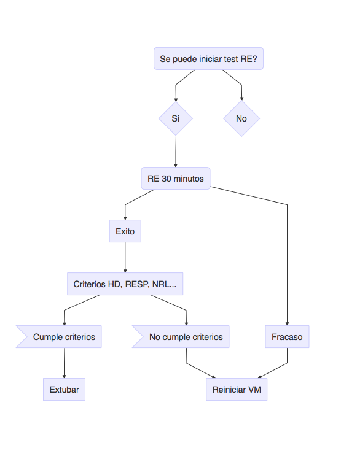
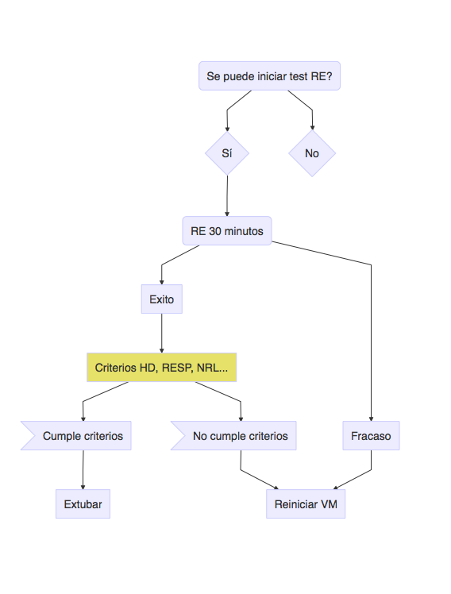
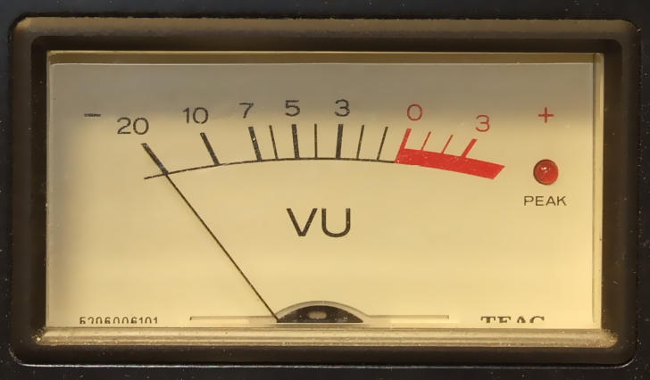
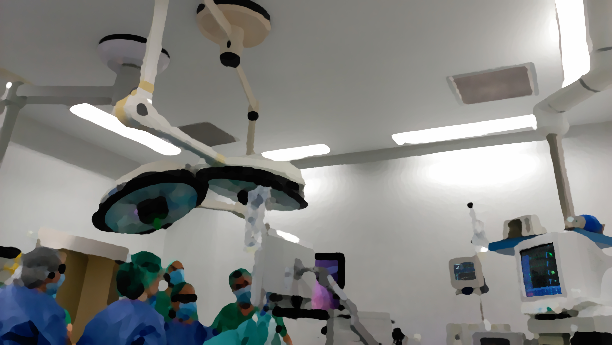

Conceptos básicos
Evidencia disponible


Sedación
Nivel NRL previo:
SNC
SN periférico
Musculatura
RPVA: SNC + músculo
Riesgo/beneficio:
riesgo: deterioro NRL
beneficio: vigilancia NRL óptima
Oxigenación:
PaO2 / FiO2
Niveles basales
Reserva
Mecánica:
Factor estructural pulmonar
Factor extrapulmonar
Estabilidad
Sangrado
Consumo de O2
Otros:

\[Oferta + Reserva - Demanda \geq 0\]

| Nivel | La evidencia científica procede de… |
|---|---|
| Ia | Metanálisis de ensayos clínicos aleatorizados |
| Ib | Al menos de un ensayo clínico aleatorizado |
| IIa | Al menos de un estudio prospectivo controlado bien diseñado sin aleatorizar |
| IIb | Al menos de un estudio casi experimental bien diseñado |
| III | Estudios observacionales bien diseñados, como estudios comparativos, estudios de correlación o estudios de casos y controles |
| IV | Documentos u opiniones de comités de expertos y/o experiencias clínicas de autoridades de prestigio |
| Grado Recomendación | Requiere… |
|---|---|
| A (EC Ia, Ib) | Al menos un ensayo clínico aleatorizado como parte de un conjunto de evidencia científica globalmente de buena calidad y consistencia con relación a la recomendación específica |
| B (EC IIa, IIb, III) | Disponer de estudios clínicos metodológicamente correctos que no sean ensayos clínicos aleatorizados sobre el tema de la recomendación. Incluye estudios que no cumplan los criterios ni de A ni de C |
| C (Nivel EC IV) | Disponer de documentos u opiniones de comités de expertos y/o experiencias clínicas de autoridades reconocidas. Indica la ausencia de estudios clínicos directamente aplicables y de alta calidad |
Criterios inicio de SBT:
Mejoría de fallo resp. de base
Estabilidad hemodinámica (VPs baja dosis)
Esfuerzo respiratorio espontáneo
Test respiración espontánea (SBT)?:
Tiempo prolongado con bajo soporte?
Diferentes estrategias soporte (grado B):
Test respiración espontánea (SBT)?:
Tiempo prolongado con bajo soporte?
Diferentes estrategias soporte (grado B):
Protocolos llevados a cabo por personal no médico?:
Mejores resultados que cuidados standard (Grado A)
Unidades de destete?:
Exito en pacientes que se pensaban no recuperables (Grado B)
Dependencia permanente: 3-6 meses weaning (Evidencia III)
VMNI
SBTs (criterios)
Protocolos enfermería